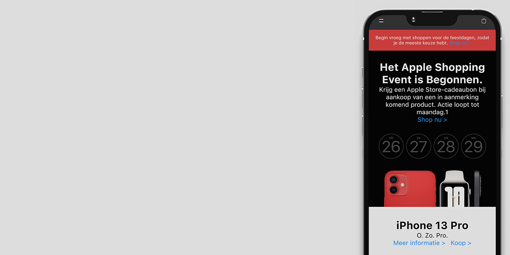

Apple website herbouwen
Voor het vak Front-end Development moesten we twee pagina's van een zelf gekozen website nabouwen. Ik heb gekozen om de Homepagina en Store pagina van Apple na te gaan bouwen. Eerst was het de bedoeling om de Mac Book pro informatie pagina uit te werken, maar dit was nog te hoog gegrepen en in tijdsnood niet meer mogelijk.
De hele project is gemaakt met HTML, CSS en JavaScript. Verder is het project gemaakt met een Mobile-First design approach en heb ik daarna alles responsive gemaakt voor desktop en tablet.
Ik heb tijdens dit project veel geleerd over semantiek, responsive webdesign en het maken van interactieve elementen in de website doormiddel van JavaScript. Ik vond het erg leuk om te doen en heeft me veel ervaring opgeleverd.